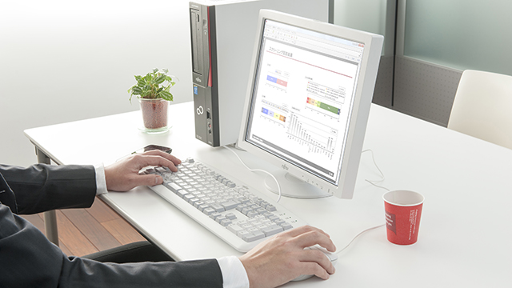

HOME
ABOUT THE SERVICES WHICH PROVIDED
HARDWARE SERVICES

Flexibly responding to your needs and wishes. We know that you sometimes need a very special configuration for your specific environment. By choosing Fujitsu as your IT supplier, you have the option of choosing modules that are not part of our portfolio, e.g. a customer-specific component, for integration into your new customized systems.
- Satisfying customers’ needs for very special configurations in their specific environments
- Comprehensive portfolio of services to customize your devices
- Benefit from the option of choosing modules that are not part of our portfolio, e.g. a customer-specific component, for integration into your new customized systems
- The standard configuration is too loaded for the intended use? - Profit from the removal of standard components from a Fujitsu system.
- tested and produced in top quality just like our standard product portfolio
for more information click this
SOFTWARE SERVICES
Individual software configurations and more. The scope of our Software Services includes e.g. the replication of a master hard disk drive ex factory and the customized pre-installation of the CMOS settings. The use of predefined passwords or a consistent software across the whole network, are no problem with our software services. According to your requirements we deliver all systems as "ready to run" systems Zero touch deployment solutions to your systems ready to run.
- We deliver all systems as "ready to run" systems according to your requirements.
- scope of our Software services includes also the replication of a master hard disk drive ex factory and the customized pre-installation of the CMOS settings.
- requirements like the use of predefined passwords or a consistent software across the whole network, are no problem with our software services
- touch deployment solutions to your systems ready to run
for more information click this
ADD-ON SERVICES
Our add-on services make your rollout a piece of cake and, moreover, polish up your corporate image. These services are barely classifiable in Hardware and Software services. In fact, they are really valuable if you are about to install a large number of systems at different locations (roll-out), you want to have a modified appearance for your systems, e.g. for increasing your company awareness, if you want to bring our PCs to market again. But some product roll-outs have even more specific requirements for e.g. an active lifecycle management, an enhanced lifecycle or a change control management, thus ensuring seamless IT operations.
- Add-On Services make your rollout uncomplicated
- your rollout process e.g. if you are about to install a large number of systems at different locations
Our support smoothes the installation procedure when large numbers of systems are to be installed on-site.
- demands we provide also an active lifecycle management, an enhanced lifecycle or a change control management, thus ensuring seamless IT operations.
- smart brand details by our add-on services you can push your corporate image
for more information click this
FOR CONTACT
created by I3H GROUP